Vehicles and mileage by postcode area
This appendix is outputs/reports/mileage_report.md from the MOT-pipline repository, copied unchanged into the book by scripts/sync-pipeline.R. Paths such as outputs/... refer to that repository. See Appendix C — Maintaining this book.
Generated from reports/mileage_report.qmd by the MOT-pipline mileage_report target (profile: main). Edit the template, not this file.
This report describes the vehicles in the enhanced MOT table: how many there are, what kind, how far they are driven, how old they are and where they are, from 2005 to 2025, and ends with checks that point to possible problems in the data. How these counts compare with the vehicles DfT counts as registered, nationally and by postcode area, is the subject of the registration report (outputs/reports/registration_report.md).
Summary
- Vehicles observed in 2022: 45,015,714, of which 38,115,086 (84.7%) are cars. 39,471,501 (87.7%) have an annual mileage for the year.
- Average annual mileage of cars: 6,624 miles in 2022, against 7,898 in
- Average age of cars: 9.0 years in 2022, against 6.3 in
- Years shown: charts over time cover 2005 to 2025. Maps and other single-year figures show 2022 at the latest: vehicles under three have not had their first MOT, so the fleet observed in the last 3 years of data is incomplete. Comparisons between selected years start in 2006, because the 2005 data looks lower quality (section 2). Mileage for 2025 is partial: fewer than 90% as many vehicles have one as in the year before.
Definitions used throughout:
observed: a vehicle is counted in a year whenpca_YYYYis a postcode area (notunborn,deadorunknown). That is not always a test that year: the annualisation copies a vehicle’s first-test area back to its first registration, and carries its last-test area forward for two years after its last MOT (methodology.md, Section 3.3). So vehicles under three appear once their first test is in the data, and scrapped vehicles stay counted for about two years.annual mileage: The annualisedmileage_YYYY. Averages use only mileage flagged as plausible (legit_mileage_YYYYis TRUE). The annualisation has already removed the mileage it flagged as implausible, and a mileage with no flag was not assessed; section 6 counts both.age: whole years at 1 June of the year since first use, as in the churn tables.body type: the DfT body type from make and model matching (methodology.md, Section 4.6).Othergroups buses and coaches, heavy goods vehicles, other vehicles and vehicles with no body type.fuel: the harmonised fuel in six groups (fuel_simple): Petrol, Diesel, Hybrid Electric, Plug-in Hybrid Electric, Electric and Other.postcode area: as recorded by the annualisation. Northern Ireland isBT; the codeXX(no area recorded) is counted asunknown. Maps show Greater London enlarged in a box.
1. Where the data comes from
1.1 The chain of files
The mileage tables are the last step of a longer pipeline. Each step writes a file; the next step reads it. Nothing in the mileage step goes back to the original data.
| Step | File | What it is |
|---|---|---|
| Input | annualised_with_ves_4.parquet |
The vehicle-level annualised MOT table supplied to the project, one row per vehicle, with DVLA (VES) columns attached |
| Stage 1 | outputs/intermediate/01_core.parquet |
The input narrowed to the columns used, typed, with vehicles outside the scope removed |
| Stages 2-3 | outputs/vehicles_enhanced_maximal.parquet |
Cleaned make/model, harmonised fuel, engine size, body type and Euro status (93,352,241 vehicles) |
| Mileage | outputs/tables/mileage/*.csv |
The 10 published tables that sections 2 to 5 describe |
| Mileage | outputs/quality/mileage_profile/*.csv |
The measurements in this document |
“Scope” means a vehicle is kept if it has any recorded mileage, or any recorded postcode area, or was born on or after 2005-01-01, or shows DVLA activity (tax, V5C, MOT expiry or first registration) since that date.
The annualisation is taken as given. The pipeline does not re-derive annual mileage, the postcode area or the plausibility flag. mileage_YYYY is already annual miles, so no scaling is applied (mileage_scaling in section 1.3). How those columns are built belongs to the linkage stage’s documentation, not this one.
1.2 Which vehicles are counted
Unlike the churn tables, the mileage tables keep every MOT test class and every body type. Nothing is filtered out: a vehicle missing from a year is missing because it had no mileage or no postcode area that year, not because it was excluded.
Vehicles behind the mileage tables
Counted over the whole series: a vehicle counts under vehicles_with_mileage_in_any_year if it has a mileage in at least one year. The tables themselves are per vehicle-year, so these are upper bounds on what any single year holds.
vehicles_in_vehicles_enhanced: Every in-scope vehiclevehicles_with_mileage_in_any_year: Has a recorded mileage in at least one yearvehicles_with_plausible_mileage_in_any_year: Has a mileage judged plausible in at least one yearvehicles_with_mileage_removed_in_any_year: Had a mileage judged implausible and removed in at least one yearvehicles_in_a_real_postcode_area_in_any_year: Was located in at least one yearvehicles_with_no_body_type: No DfT body type could be decided, so they fall in the Other group of the chartsvehicles_with_no_first_use_date: No age can be computedvehicles_with_no_test_class: Missing from the test class tables
| measure | n_vehicles | pct_of_vehicles |
|---|---|---|
| vehicles_in_vehicles_enhanced | 93,352,241 | 100.00 |
| vehicles_with_mileage_in_any_year | 77,335,802 | 82.84 |
| vehicles_with_plausible_mileage_in_any_year | 77,335,802 | 82.84 |
| vehicles_with_mileage_removed_in_any_year | 5,113,947 | 5.48 |
| vehicles_in_a_real_postcode_area_in_any_year | 75,436,008 | 80.81 |
| vehicles_with_no_body_type | 2,927,440 | 3.14 |
| vehicles_with_no_first_use_date | 123 | 0.00 |
| vehicles_with_no_test_class | 5,506,725 | 5.90 |
1.3 The settings these tables were built with
Set in config.yml. The mileage tables use the attributes as supplied for test class and fuel, and the harmonised attributes for body type and fuel group, which is why the same fleet appears twice with different fuel labels (section 5.1).
| setting | value |
|---|---|
| profile | main |
| years.first | 2005 |
| years.last | 2025 |
| scope.start_date | 2005-01-01 |
| test_class_column | test_class (harmonised) |
| fuel_column | fuel_simple (harmonised) |
| body_type_column | body_type (harmonised) |
| fuel_group_column | fuel_simple (harmonised) |
| mileage_scaling | none: the input columns are already annual miles |
| age_cap | 40 |
| over_mileage_threshold | 50000 |
2. The tables, one at a time
2.1 Every file written
| file | n_rows | n_columns | grain | contents |
|---|---|---|---|---|
| mileage_by_pca_year_long.csv | 4,070 | 6 | year x postcode area x plausibility flag | Vehicles, total and mean annual mileage for every pca_YYYY value |
| mileage_by_pca_wide.csv | 242 | 23 | postcode area x plausibility flag, one column per year | The total mileage of the long table, pivoted |
| mileage_by_legit_flag_year.csv | 41 | 4 | year x plausibility flag | Vehicles and total mileage: the national totals behind the flag |
| mileage_by_test_class_year_long.csv | 147 | 5 | year x MOT test class | Vehicles and total mileage by the harmonised test class (as in the churn tables), with its label |
| mileage_by_test_class_wide.csv | 7 | 23 | MOT test class, one column per year | The total mileage of the long table, pivoted |
| mileage_by_fuel_year_long.csv | 126 | 4 | year x fuel group | Vehicles and total mileage by the harmonised fuel group (fuel_simple, as in the churn tables) |
| mileage_by_fuel_wide.csv | 6 | 22 | fuel group, one column per year | The total mileage of the long table, pivoted |
| mileage_by_pca_year_body_fuel.csv | 52,573 | 15 | year x pca_YYYY x body type x fuel group | The area table behind the report: vehicles, mileage coverage, mileage, the negative and over-50,000 tails, and age |
| mileage_by_age_year_body_fuel.csv | 19,655 | 8 | year x body type x fuel group x age | Observed vehicles and their plausible mileage by age, for vehicles in a real postcode area |
| mileage_distribution_by_year_body.csv | 11,191 | 5 | year x body type x plausibility flag x mileage band | Recorded mileage in bands of 1,000 to 50,000, then wider |
| README_outputs.csv | NA | NA | one row per file | The index written with the tables |
Long and wide forms hold the same numbers: a wide file is the long file pivoted, one column per year, carrying total mileage only.
2.2 Every column, with how often it is blank
mileage_by_age_year_body_fuel.csv
| column | description | n_blank | pct_blank |
|---|---|---|---|
| year | Calendar year the row describes | 0 | 0.00 |
| body_type | DfT body type of the vehicle (R/assemble.R) | 2,725 | 13.86 |
| fuel_simple | Fuel in six groups, including Plug-in Hybrid Electric | 0 | 0.00 |
| age | Whole years at 1 June of the year since first use, as in the churn tables, capped at 40; -1 holds every negative age (first used after 1 June) | 0 | 0.00 |
| n_vehicles | Vehicles in the group | 0 | 0.00 |
| n_with_mileage | Of those, how many have a mileage recorded that year | 0 | 0.00 |
| n_legit_mileage | Of those, how many have a mileage judged plausible | 0 | 0.00 |
| total_legit_mileage | Total annual mileage judged plausible | 0 | 0.00 |
mileage_by_fuel_wide.csv
| column | description | n_blank | pct_blank |
|---|---|---|---|
| fuel_simple | Fuel in six groups, including Plug-in Hybrid Electric | 0 | 0 |
| 2005 … 2025 (one per year) | Total annual mileage in that year | 0 | 0 |
mileage_by_fuel_year_long.csv
| column | description | n_blank | pct_blank |
|---|---|---|---|
| year | Calendar year the row describes | 0 | 0 |
| fuel_simple | Fuel in six groups, including Plug-in Hybrid Electric | 0 | 0 |
| n_vehicles | Vehicles in the group | 0 | 0 |
| mileage | Total annual mileage of the group | 0 | 0 |
mileage_by_legit_flag_year.csv
| column | description | n_blank | pct_blank |
|---|---|---|---|
| year | Calendar year the row describes | 0 | 0.00 |
| legit_mileage | The annualisation’s flag: TRUE where it judged the mileage plausible, blank where it did not assess it. Mileage it judged implausible has already been removed, so FALSE never carries a mileage | 20 | 48.78 |
| n_vehicles | Vehicles in the group | 0 | 0.00 |
| mileage | Total annual mileage of the group | 0 | 0.00 |
mileage_by_pca_wide.csv
| column | description | n_blank | pct_blank |
|---|---|---|---|
| pca | Postcode area in that year, or unborn / dead / unknown where none was recorded | 0 | 0.00 |
| legit_mileage | The annualisation’s flag: TRUE where it judged the mileage plausible, blank where it did not assess it. Mileage it judged implausible has already been removed, so FALSE never carries a mileage | 120 | 49.59 |
| 2005 … 2025 (one per year) | Total annual mileage in that year | 1,012 | 418.18 |
mileage_by_pca_year_body_fuel.csv
| column | description | n_blank | pct_blank |
|---|---|---|---|
| year | Calendar year the row describes | 0 | 0.00 |
| pca | Postcode area in that year, or unborn / dead / unknown where none was recorded | 0 | 0.00 |
| body_type | DfT body type of the vehicle (R/assemble.R) | 1,415 | 2.69 |
| fuel_simple | Fuel in six groups, including Plug-in Hybrid Electric | 0 | 0.00 |
| n_vehicles | Vehicles in the group | 0 | 0.00 |
| n_with_mileage | Of those, how many have a mileage recorded that year | 0 | 0.00 |
| n_legit_mileage | Of those, how many have a mileage judged plausible | 0 | 0.00 |
| n_mileage_removed | Vehicles whose mileage was judged implausible and removed | 0 | 0.00 |
| total_mileage | Total annual mileage of the group, including mileage with no plausibility flag | 0 | 0.00 |
| total_legit_mileage | Total annual mileage judged plausible | 0 | 0.00 |
| n_negative_mileage | Recorded mileages below zero | 0 | 0.00 |
| n_over_50k_mileage | Recorded mileages above 50,000 | 0 | 0.00 |
| n_with_age | Vehicles with an age of zero or more (first used by 1 June of the year) | 0 | 0.00 |
| total_age | Sum of those ages, so the report can average over any grouping | 0 | 0.00 |
| n_negative_age | Vehicles first used after 1 June of the year (most of them later in the same year) | 0 | 0.00 |
mileage_by_pca_year_long.csv
| column | description | n_blank | pct_blank |
|---|---|---|---|
| year | Calendar year the row describes | 0 | 0.0 |
| pca | Postcode area in that year, or unborn / dead / unknown where none was recorded | 0 | 0.0 |
| legit_mileage | The annualisation’s flag: TRUE where it judged the mileage plausible, blank where it did not assess it. Mileage it judged implausible has already been removed, so FALSE never carries a mileage | 1,510 | 37.1 |
| n_vehicles | Vehicles in the group | 0 | 0.0 |
| mileage | Total annual mileage of the group | 0 | 0.0 |
| mean_mileage | Mean annual mileage over the vehicles with a recorded mileage | 0 | 0.0 |
mileage_by_test_class_wide.csv
| column | description | n_blank | pct_blank |
|---|---|---|---|
| test_class | Harmonised MOT test class (test_class: the anonymised class, else that of similar vehicles), as in the churn tables | 1 | 14.29 |
| test_class_label | Label of that test class | 1 | 14.29 |
| 2005 … 2025 (one per year) | Total annual mileage in that year | 0 | 0.00 |
mileage_by_test_class_year_long.csv
| column | description | n_blank | pct_blank |
|---|---|---|---|
| year | Calendar year the row describes | 0 | 0.00 |
| test_class | Harmonised MOT test class (test_class: the anonymised class, else that of similar vehicles), as in the churn tables | 21 | 14.29 |
| n_vehicles | Vehicles in the group | 0 | 0.00 |
| mileage | Total annual mileage of the group | 0 | 0.00 |
| test_class_label | Label of that test class | 21 | 14.29 |
mileage_distribution_by_year_body.csv
| column | description | n_blank | pct_blank |
|---|---|---|---|
| year | Calendar year the row describes | 0 | 0.00 |
| body_type | DfT body type of the vehicle (R/assemble.R) | 1,675 | 14.97 |
| legit_mileage | The annualisation’s flag: TRUE where it judged the mileage plausible, blank where it did not assess it. Mileage it judged implausible has already been removed, so FALSE never carries a mileage | 3,694 | 33.01 |
| mileage_from | Lower edge of the mileage band, in miles; -1000 holds negative mileage | 0 | 0.00 |
| n_vehicles | Vehicles in the group | 0 | 0.00 |
A blank is not a zero. legit_mileage is blank where the annualisation did not assess the mileage, and mean_mileage is blank where a group has no recorded mileage to average.
3. The vocabulary, pedantically
legit_mileage is the annualisation’s judgement, and it has three states, not two. TRUE is a mileage it judged plausible. A blank is a mileage it did not assess. FALSE means it judged the mileage implausible and removed it, so a FALSE row never carries a mileage; n_mileage_removed counts those vehicles. Totals in this report are plausible mileage unless they say otherwise, and section 4.2 gives the size of the unassessed group year by year.
A postcode area is pca_YYYY: either a real area, or one of unborn (before the vehicle existed), dead (after its last MOT, which begins about two years after the last test because the annualisation carries the area forward) or unknown (a year inside its life with no area recorded, including the code XX. Most unknown vehicles were never MOT tested: with no last MOT year they are never dead, so they stay unknown from birth to the end of the data; see quality/pca_unknown_by_year.csv). “Observed” in this report means a real area, not necessarily a test.
body_type is the DfT body type attached in Stage 2, not the MOT test class, so it exists for vehicles with no test class.
The charts group it as Cars, Light goods vehicles, Motorcycles and Other, with everything else in Other.
fuel_simple is the harmonised fuel in six groups, which separates plug-in hybrids from other hybrids; every table uses it, as the churn tables do. test_class is the harmonised MOT test class (the anonymised class, else that of similar vehicles), as in the churn tables.
Age is the number of whole years between the first use date and 1 June of the year, as in the churn tables. A vehicle first used after 1 June has a negative age; those are counted separately rather than dropped (n_negative_age). The age table caps age at 40 and holds every negative age at -1 (the churn tables’ <0).
Mileage bands in mileage_distribution_by_year_body.csv are named by their lower edge in miles: bands of 1,000 up to 50,000, then three wider bands, with negative mileage at -1000.
Every mileage band, all years and body types together
pct is the share of all recorded vehicle-years.
| mileage_from | label | n_vehicle_years | pct |
|---|---|---|---|
| 0 | 0-1,000 | 65,728,439 | 8.75 |
| 1,000 | 1,000-2,000 | 55,153,174 | 7.34 |
| 2,000 | 2,000-3,000 | 60,136,709 | 8.01 |
| 3,000 | 3,000-4,000 | 64,037,687 | 8.52 |
| 4,000 | 4,000-5,000 | 65,688,362 | 8.74 |
| 5,000 | 5,000-6,000 | 64,437,091 | 8.58 |
| 6,000 | 6,000-7,000 | 60,330,649 | 8.03 |
| 7,000 | 7,000-8,000 | 54,362,108 | 7.24 |
| 8,000 | 8,000-9,000 | 47,217,333 | 6.28 |
| 9,000 | 9,000-10,000 | 39,933,018 | 5.32 |
| 10,000 | 10,000-11,000 | 32,829,196 | 4.37 |
| 11,000 | 11,000-12,000 | 26,578,680 | 3.54 |
| 12,000 | 12,000-13,000 | 21,290,674 | 2.83 |
| 13,000 | 13,000-14,000 | 16,950,193 | 2.26 |
| 14,000 | 14,000-15,000 | 13,504,219 | 1.80 |
| 15,000 | 15,000-16,000 | 10,754,470 | 1.43 |
| 16,000 | 16,000-17,000 | 8,601,733 | 1.15 |
| 17,000 | 17,000-18,000 | 6,928,680 | 0.92 |
| 18,000 | 18,000-19,000 | 5,634,617 | 0.75 |
| 19,000 | 19,000-20,000 | 4,617,141 | 0.62 |
| 20,000 | 20,000-21,000 | 3,806,771 | 0.51 |
| 21,000 | 21,000-22,000 | 3,165,716 | 0.42 |
| 22,000 | 22,000-23,000 | 2,657,748 | 0.35 |
| 23,000 | 23,000-24,000 | 2,245,818 | 0.30 |
| 24,000 | 24,000-25,000 | 1,913,735 | 0.26 |
| 25,000 | 25,000-26,000 | 1,637,171 | 0.22 |
| 26,000 | 26,000-27,000 | 1,406,833 | 0.19 |
| 27,000 | 27,000-28,000 | 1,217,517 | 0.16 |
| 28,000 | 28,000-29,000 | 1,057,100 | 0.14 |
| 29,000 | 29,000-30,000 | 922,315 | 0.12 |
| 30,000 | 30,000-31,000 | 804,788 | 0.11 |
| 31,000 | 31,000-32,000 | 701,427 | 0.09 |
| 32,000 | 32,000-33,000 | 617,181 | 0.08 |
| 33,000 | 33,000-34,000 | 545,210 | 0.07 |
| 34,000 | 34,000-35,000 | 479,775 | 0.06 |
| 35,000 | 35,000-36,000 | 425,743 | 0.06 |
| 36,000 | 36,000-37,000 | 376,406 | 0.05 |
| 37,000 | 37,000-38,000 | 334,806 | 0.04 |
| 38,000 | 38,000-39,000 | 297,289 | 0.04 |
| 39,000 | 39,000-40,000 | 265,156 | 0.04 |
| 40,000 | 40,000-41,000 | 238,256 | 0.03 |
| 41,000 | 41,000-42,000 | 212,954 | 0.03 |
| 42,000 | 42,000-43,000 | 192,439 | 0.03 |
| 43,000 | 43,000-44,000 | 172,275 | 0.02 |
| 44,000 | 44,000-45,000 | 156,957 | 0.02 |
| 45,000 | 45,000-46,000 | 142,168 | 0.02 |
| 46,000 | 46,000-47,000 | 129,811 | 0.02 |
| 47,000 | 47,000-48,000 | 118,901 | 0.02 |
| 48,000 | 48,000-49,000 | 109,753 | 0.01 |
| 49,000 | 49,000-50,000 | 101,323 | 0.01 |
| 50,000 | 50,000-99,999 | 105,523 | 0.01 |
4. How complete the variables are
4.1 The columns the tables are built from
| column | type | n_missing | pct_missing | description |
|---|---|---|---|---|
| test_class | INTEGER | 5,506,725 | 5.90 | Harmonised MOT test class; the test class tables are grouped by it |
| body_type | VARCHAR | 2,927,440 | 3.14 | DfT body type; the area tables are grouped by it |
| fuel_simple | VARCHAR | 0 | 0.00 | Harmonised fuel group; the fuel and area tables are grouped by it |
| first_use_date | DATE | 123 | 0.00 | First use date, which every age in the tables is measured from |
| body_type_src | VARCHAR | 2,927,440 | 3.14 | How the body type was decided |
| fuel_src | VARCHAR | 0 | 0.00 | Where the harmonised fuel came from |
| total_mileage | INTEGER | 0 | 0.00 | Sum of annual mileage over all years |
4.2 Coverage year by year
Mileage and location coverage, by year
Summed from mileage_by_pca_year_body_fuel.csv, so it describes exactly the published tables.
n_vehicles: Every in-scope vehicle, whatever its postcode area statusn_real_pca: Vehicles in a real postcode area that yearn_with_mileage: Vehicles with a recorded mileagen_legit_mileage: Of those, the mileage judged plausiblen_unassessed_mileage: Of those, the mileage it did not assessn_mileage_removed: Vehicles whose mileage it judged implausible and removedpct_of_recorded_unassessed: Unassessed as a share of recorded mileagemean_legit_mileage: Mean plausible annual mileage
| year | n_vehicles | n_real_pca | n_with_mileage | n_legit_mileage | n_unassessed_mileage | n_mileage_removed | pct_of_recorded_unassessed | mean_legit_mileage |
|---|---|---|---|---|---|---|---|---|
| 2005 | 93,352,241 | 31,887,019 | 32,452,735 | 32,452,735 | 0 | 218,720 | 0.00 | 8,670.4 |
| 2006 | 93,352,241 | 34,660,354 | 32,814,077 | 32,735,294 | 78,783 | 541,099 | 0.24 | 7,839.4 |
| 2007 | 93,352,241 | 37,488,259 | 33,453,711 | 33,362,361 | 91,350 | 545,479 | 0.27 | 7,666.2 |
| 2008 | 93,352,241 | 39,493,743 | 33,775,906 | 33,674,366 | 101,540 | 527,435 | 0.30 | 7,647.0 |
| 2009 | 93,352,241 | 39,685,473 | 33,847,006 | 33,746,316 | 100,690 | 515,834 | 0.30 | 7,574.5 |
| 2010 | 93,352,241 | 39,865,500 | 34,105,231 | 34,011,730 | 93,501 | 540,551 | 0.27 | 7,457.7 |
| 2011 | 93,352,241 | 39,997,912 | 34,266,679 | 34,169,693 | 96,986 | 571,335 | 0.28 | 7,418.4 |
| 2012 | 93,352,241 | 40,321,952 | 34,584,164 | 34,487,653 | 96,511 | 520,620 | 0.28 | 7,373.0 |
| 2013 | 93,352,241 | 40,943,924 | 35,209,581 | 35,114,698 | 94,883 | 449,107 | 0.27 | 7,361.0 |
| 2014 | 93,352,241 | 41,736,689 | 36,140,728 | 36,047,681 | 93,047 | 436,350 | 0.26 | 7,310.3 |
| 2015 | 93,352,241 | 42,823,933 | 37,170,928 | 37,105,127 | 65,801 | 397,347 | 0.18 | 7,257.4 |
| 2016 | 93,352,241 | 44,038,527 | 37,964,991 | 37,960,661 | 4,330 | 358,508 | 0.01 | 7,237.2 |
| 2017 | 93,352,241 | 44,437,937 | 37,800,202 | 37,795,639 | 4,563 | 333,007 | 0.01 | 7,197.9 |
| 2018 | 93,352,241 | 45,200,905 | 38,286,966 | 38,279,975 | 6,991 | 317,630 | 0.02 | 7,064.9 |
| 2019 | 93,352,241 | 45,683,344 | 38,657,512 | 38,650,339 | 7,173 | 283,619 | 0.02 | 6,308.7 |
| 2020 | 93,352,241 | 45,530,719 | 39,529,622 | 39,525,908 | 3,714 | 302,900 | 0.01 | 5,905.6 |
| 2021 | 93,352,241 | 45,669,619 | 39,832,221 | 39,827,085 | 5,136 | 253,213 | 0.01 | 6,580.8 |
| 2022 | 93,352,241 | 45,015,714 | 39,936,342 | 39,931,329 | 5,013 | 238,071 | 0.01 | 6,759.7 |
| 2023 | 93,352,241 | 43,391,406 | 38,906,652 | 38,901,211 | 5,441 | 224,155 | 0.01 | 6,913.5 |
| 2024 | 93,352,241 | 41,573,424 | 36,734,471 | 36,728,441 | 6,030 | 211,841 | 0.02 | 6,883.6 |
| 2025 | 93,352,241 | 39,127,049 | 25,803,313 | 25,795,143 | 8,170 | 147,846 | 0.03 | 6,775.6 |
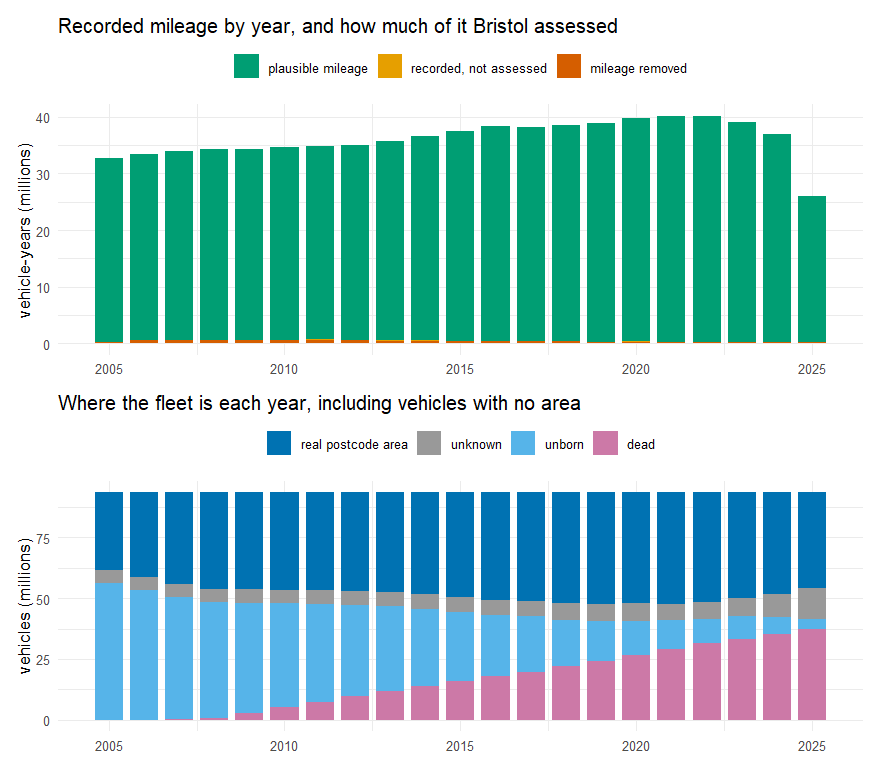
Figure 1. Top: the vehicle-years with a recorded mileage each year, split into mileage the annualisation judged plausible and mileage it did not assess, with the vehicles whose mileage it removed as implausible (the n_legit_mileage, n_unassessed_mileage and n_mileage_removed columns of the table above). Bottom: every in-scope vehicle each year by its postcode area status (pca_YYYY). Both are summed from mileage_by_pca_year_body_fuel.csv.
Two things to read off these charts. The unassessed share is small in the middle of the series and large at the end: 0.03% of the mileage recorded in 2025 was never assessed, against 0.18% in 2015, because the last year is partial. And the unknown group grows from 5,286,802 vehicles in 2005 to 12,642,716 in 2025, so a larger share of the fleet each year has no location at all. Those vehicles are in the vehicle counts but in none of the postcode area rows.
5. How the values are distributed
5.1 Every grouping variable, with its values
Body type (body_type, harmonised)
Vehicle-years over the whole series, so a vehicle present for twenty years counts twenty times. pct_of_mileage is the share of total mileage, which is what makes the rare fuels rare. total_mileage_bn is billions of miles.
| value | n_vehicle_years | pct_of_vehicle_years | total_mileage_bn | pct_of_mileage |
|---|---|---|---|---|
| Cars | 1,585,512,117 | 80.88 | 4,573.44 | 84.97 |
| Light goods vehicles | 197,034,747 | 10.05 | 730.85 | 13.58 |
| Motorcycles | 84,431,256 | 4.31 | 45.09 | 0.84 |
| (none) | 61,476,240 | 3.14 | 9.03 | 0.17 |
| Heavy goods vehicles | 16,765,224 | 0.86 | 6.49 | 0.12 |
| Other vehicles | 11,974,704 | 0.61 | 10.47 | 0.19 |
| Buses and coaches | 3,202,773 | 0.16 | 7.24 | 0.13 |
Fuel group (fuel_simple, harmonised)
Vehicle-years over the whole series, so a vehicle present for twenty years counts twenty times. pct_of_mileage is the share of total mileage, which is what makes the rare fuels rare. total_mileage_bn is billions of miles.
| value | n_vehicle_years | pct_of_vehicle_years | total_mileage_bn | pct_of_mileage |
|---|---|---|---|---|
| Petrol | 1,094,060,100 | 55.81 | 2,526.73 | 46.94 |
| Diesel | 703,486,665 | 35.88 | 2,704.09 | 50.24 |
| Hybrid Electric | 77,625,177 | 3.96 | 88.91 | 1.65 |
| Electric | 57,605,772 | 2.94 | 29.63 | 0.55 |
| Plug-in Hybrid Electric | 22,887,333 | 1.17 | 19.69 | 0.37 |
| Other | 4,732,014 | 0.24 | 13.58 | 0.25 |
MOT test class (test_class, harmonised)
Vehicle-years over the whole series, so a vehicle present for twenty years counts twenty times. pct_of_mileage is the share of total mileage, which is what makes the rare fuels rare. total_mileage_bn is billions of miles.
| value | n_vehicle_years | pct_of_vehicle_years | total_mileage_bn | pct_of_mileage |
|---|---|---|---|---|
| Cars, Vans and Small Motorhomes | 697,228,931 | 92.81 | 5,089.13 | 94.41 |
| Motorcycles over 200cc | 22,146,192 | 2.95 | 31.30 | 0.58 |
| Light Goods Vehicles | 18,590,415 | 2.47 | 224.29 | 4.16 |
| Motorcycles up to 200cc | 8,421,937 | 1.12 | 13.74 | 0.25 |
| (none) | 3,570,617 | 0.48 | 22.61 | 0.42 |
| Minibuses and Larger Passenger Vehicles | 998,708 | 0.13 | 8.72 | 0.16 |
| Three-wheeled vehicles up to 450kg | 316,238 | 0.04 | 0.46 | 0.01 |
Fuel group, every recorded mileage (fuel_simple)
Vehicle-years over the whole series, so a vehicle present for twenty years counts twenty times. pct_of_mileage is the share of total mileage, which is what makes the rare fuels rare. total_mileage_bn is billions of miles.
| value | n_vehicle_years | pct_of_vehicle_years | total_mileage_bn | pct_of_mileage |
|---|---|---|---|---|
| Petrol | 443,938,706 | 59.09 | 2,531.53 | 46.97 |
| Diesel | 289,135,566 | 38.49 | 2,706.87 | 50.22 |
| Hybrid Electric | 10,368,748 | 1.38 | 88.91 | 1.65 |
| Electric | 3,828,396 | 0.51 | 29.63 | 0.55 |
| Plug-in Hybrid Electric | 2,107,743 | 0.28 | 19.69 | 0.37 |
| Other | 1,893,879 | 0.25 | 13.62 | 0.25 |
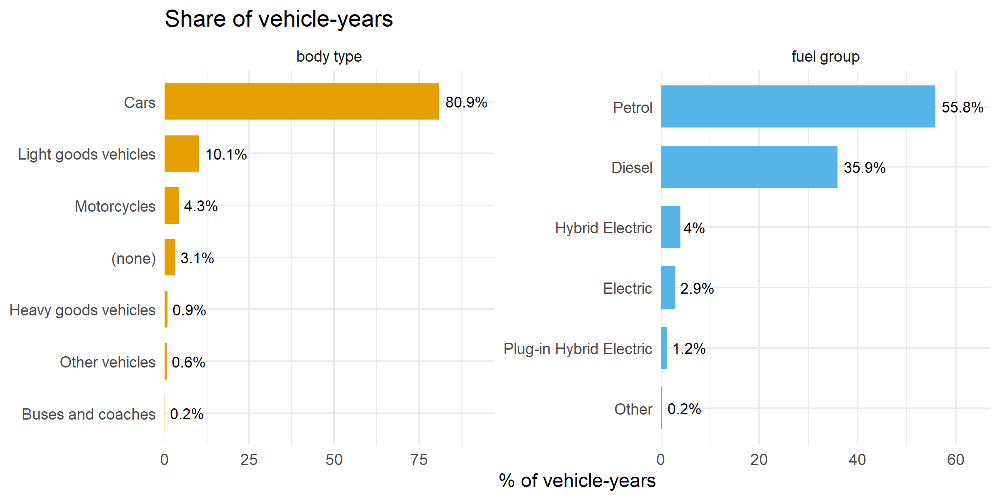
Figure 2. The share of all vehicle-years in each body type and fuel group (pct_of_vehicle_years in the tables above), over the whole series, so a vehicle present for twenty years counts twenty times. Values under 0.01% are left out.
5.2 Where the mileage sits
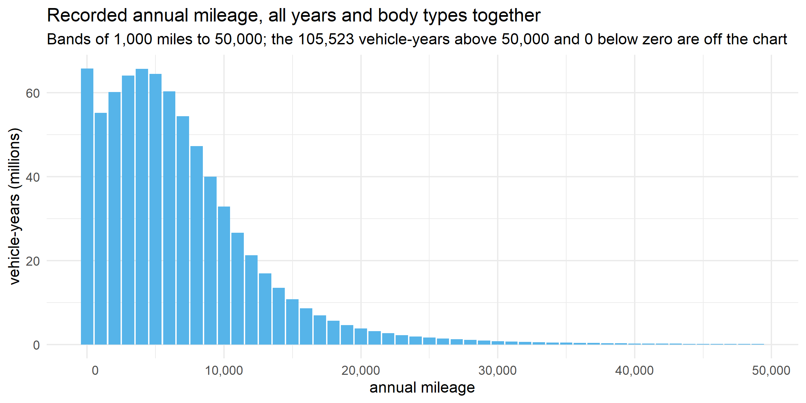
Figure 3. Recorded annual mileage over every year and body type, in 1,000-mile bands from 0 to 50,000: vehicle-years with a mileage, whether the annualisation judged it plausible or did not assess it. The subtitle counts the vehicle-years outside the range shown.
5.3 Mileage by age
Observed vehicles and their plausible mileage, by age
Every year together. A vehicle’s mileage is only known once it has had an MOT, so the youngest ages are thin at the end of the series; section 10 shows that year by year.
| age | n_vehicles | n_legit_mileage | mean_legit_mileage |
|---|---|---|---|
| 0 | 47,395,684 | 47,169,460 | 9,126.3 |
| 1 | 50,161,185 | 49,906,397 | 10,112.7 |
| 2 | 53,153,377 | 51,940,602 | 9,448.6 |
| 3 | 55,397,508 | 53,286,907 | 8,803.6 |
| 4 | 56,445,191 | 53,555,630 | 8,418.3 |
| 5 | 55,973,880 | 52,762,640 | 8,054.5 |
| 6 | 55,510,911 | 51,952,492 | 7,701.5 |
| 7 | 54,312,228 | 50,181,768 | 7,358.5 |
| 8 | 52,944,365 | 47,684,524 | 7,011.0 |
| 9 | 50,419,610 | 43,690,804 | 6,667.1 |
| 10 | 47,644,825 | 39,035,300 | 6,343.3 |
| 11 | 44,325,086 | 33,769,457 | 6,027.3 |
| 12 | 40,434,293 | 28,321,902 | 5,699.1 |
| 13 | 35,508,965 | 22,794,485 | 5,376.5 |
| 14 | 30,390,967 | 18,007,083 | 5,048.1 |
| 15 | 25,080,191 | 13,890,501 | 4,703.6 |
| 16 | 19,908,326 | 10,537,850 | 4,344.0 |
| 17 | 15,304,253 | 7,835,848 | 3,984.1 |
| 18 | 11,305,448 | 5,758,736 | 3,609.3 |
| 19 | 8,202,506 | 4,250,685 | 3,236.2 |
| 20 | 5,959,316 | 3,199,459 | 2,873.4 |
| 21 | 4,284,416 | 2,404,717 | 2,548.6 |
| 22 | 3,134,720 | 1,858,320 | 2,246.6 |
| 23 | 2,347,801 | 1,471,359 | 1,977.6 |
| 24 | 1,844,318 | 1,223,270 | 1,752.3 |
| 25 | 1,484,334 | 1,027,608 | 1,588.3 |
6. The fleet over time
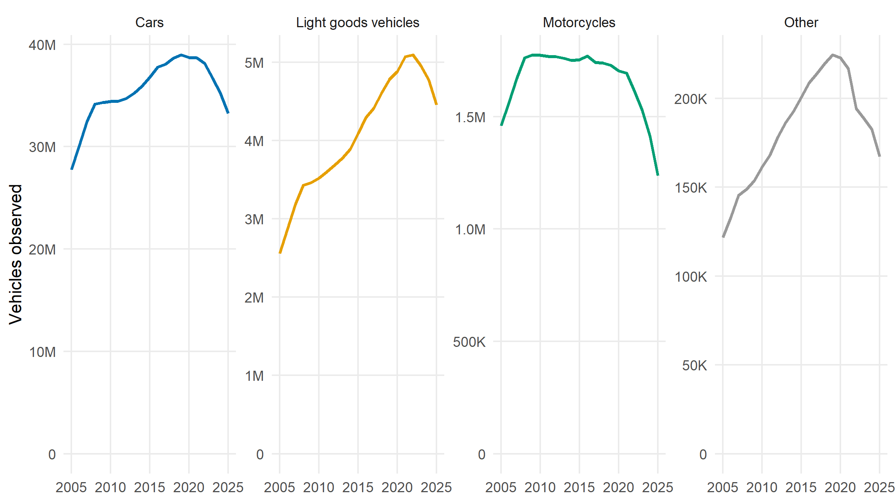
Figure 4. Vehicles observed each year (in a real postcode area), by body type, summed from mileage_by_pca_year_body_fuel.csv. Other groups buses and coaches, heavy goods vehicles, other vehicles and vehicles with no body type. Each panel has its own scale.
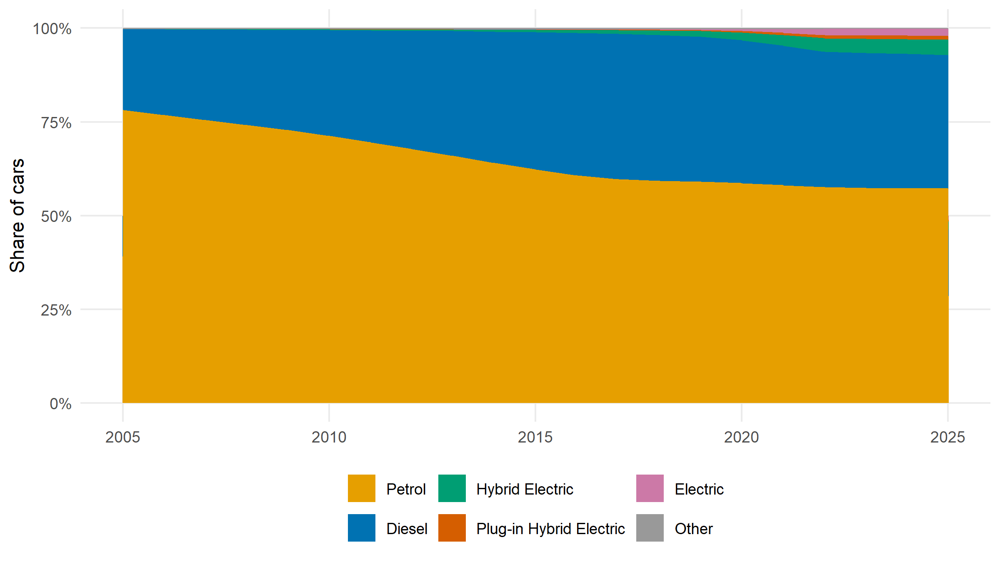
Figure 5. The share of each year’s observed cars in each fuel group (fuel_simple), from mileage_by_pca_year_body_fuel.csv.
Vehicles observed by body type
Vehicles observed in selected years, by DfT body type. Buses, heavy goods vehicles and other vehicles are mostly tested outside the MOT scheme, so few are here. The fall in the latest years is mainly vehicles not yet observed in those years, rather than vehicles leaving the fleet.
| body_type | 2006 | 2010 | 2015 | 2020 | 2022 |
|---|---|---|---|---|---|
| Cars | 30,093,822 | 34,413,700 | 36,782,850 | 38,726,105 | 38,115,086 |
| Light goods vehicles | 2,871,779 | 3,517,050 | 4,087,904 | 4,879,274 | 5,092,210 |
| Motorcycles | 1,561,890 | 1,773,357 | 1,752,468 | 1,702,373 | 1,614,065 |
| Unknown | 49,325 | 47,084 | 55,848 | 60,966 | 51,318 |
| Heavy goods vehicles | 9,287 | 19,245 | 36,029 | 51,565 | 50,366 |
| Other vehicles | 49,684 | 58,571 | 59,887 | 53,596 | 47,309 |
| Buses and coaches | 24,567 | 36,493 | 48,947 | 56,840 | 45,360 |
7. Annual mileage
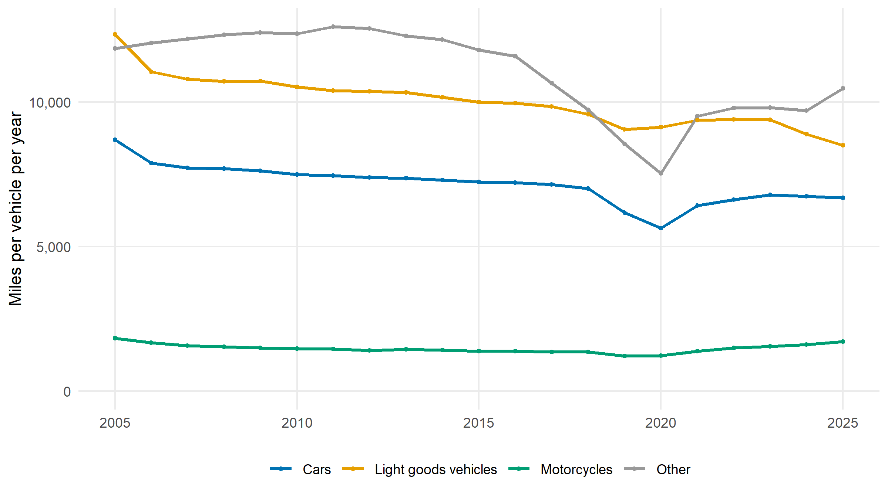
Figure 6. Average annual mileage of the observed vehicles by body type: each year’s total plausible mileage divided by the vehicles with a plausible mileage (mileage_by_pca_year_body_fuel.csv). Years with no mileage are left out, and mileage in a partial final year covers fewer vehicles.
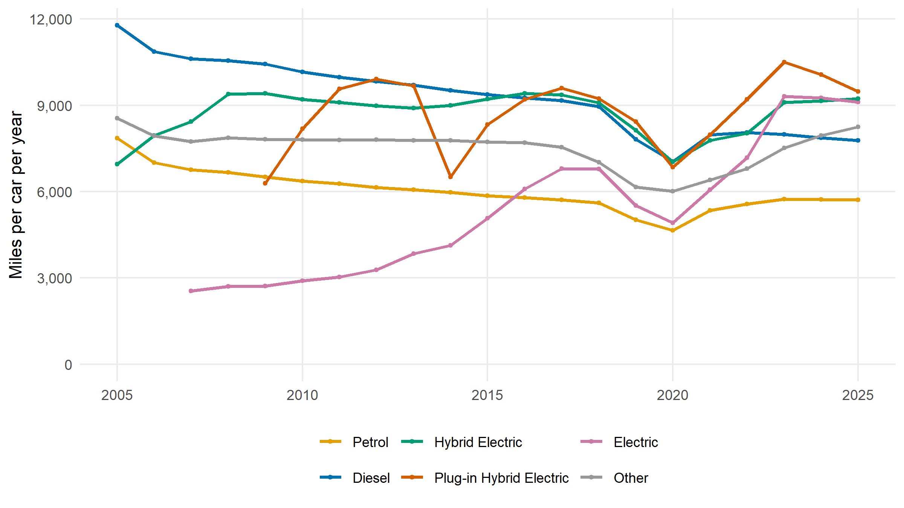
Figure 7. Average annual mileage of observed cars by fuel group, calculated as in the previous figure. Years where a fuel has fewer than 1,000 cars with a plausible mileage are left out.
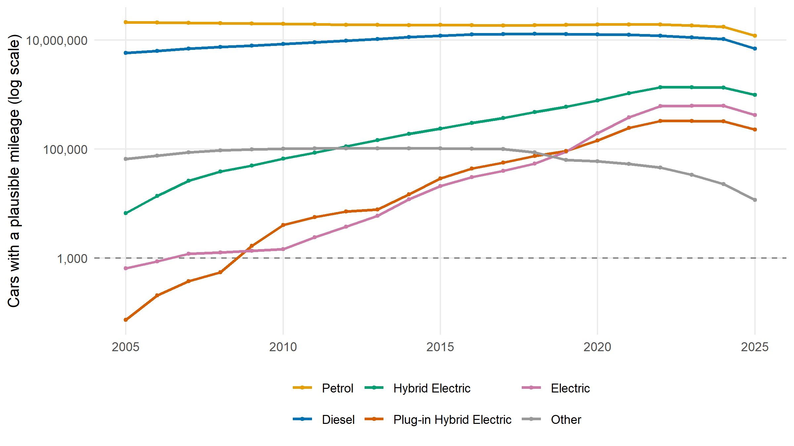
Figure 8. The number of observed cars with a plausible mileage each year by fuel group: the cars behind each average in the previous figure (n_legit_mileage from mileage_by_pca_year_body_fuel.csv). The dashed line marks the 1,000 cars below which the previous figure leaves a year out. A car’s first year covers only the months after its first use, so a year in which a small fuel group grows quickly has a lower average mileage: plug-in hybrids in 2009 and 2014, for example.
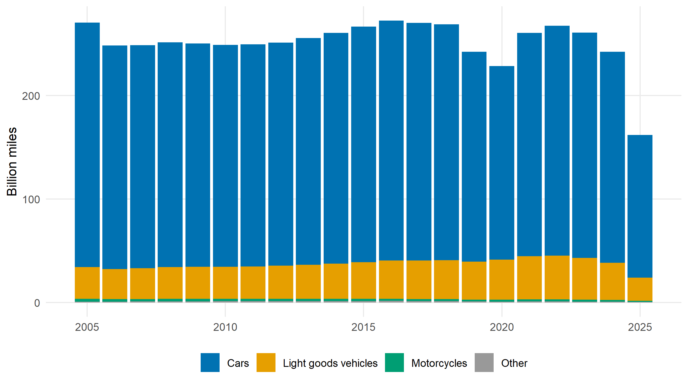
Figure 9. The total plausible annual mileage recorded each year, by body type (total_legit_mileage summed from mileage_by_pca_year_body_fuel.csv). It is the total over the vehicles with a plausible mileage, not an estimate for the whole fleet.
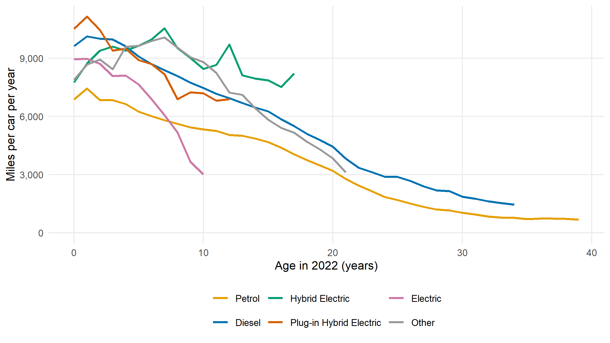
Figure 10. Average annual mileage of cars in 2022 by age and fuel group: total plausible mileage divided by cars with a plausible mileage, from mileage_by_age_year_body_fuel.csv. Ages with fewer than 500 such cars are left out. Few cars are tested before age three, and those that are, such as taxis and private hire cars, are driven much further than most.
Average annual mileage by body type
Miles per vehicle per year, plausible mileage only.
| body_type | 2006 | 2010 | 2015 | 2020 | 2022 |
|---|---|---|---|---|---|
| Buses and coaches | 12,216 | 11,049 | 9,612 | 5,698 | 7,228 |
| Cars | 7,898 | 7,501 | 7,245 | 5,641 | 6,624 |
| Heavy goods vehicles | 14,866 | 13,651 | 15,661 | 13,108 | 12,157 |
| Light goods vehicles | 11,059 | 10,531 | 10,000 | 9,136 | 9,398 |
| Motorcycles | 1,677 | 1,476 | 1,390 | 1,232 | 1,500 |
| Other vehicles | 12,384 | 13,045 | 11,355 | 5,698 | 10,331 |
| Unknown | 9,663 | 11,774 | 12,438 | 6,562 | 9,978 |
8. Age
Average ages describe the vehicles still being tested. The registration report compares the MOT data with DfT’s counts by age: vehicles over 40 are exempt from the MOT and drop out, and the youngest ages fill in only once the first test is in the data.
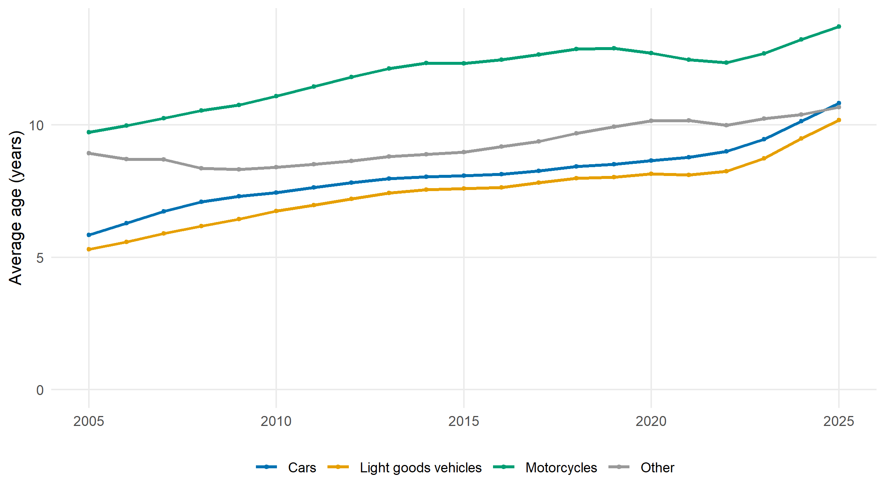
Figure 11. Average age of the observed vehicles each year, by body type: whole years at 1 June since first use, averaged over the vehicles with an age (mileage_by_pca_year_body_fuel.csv).
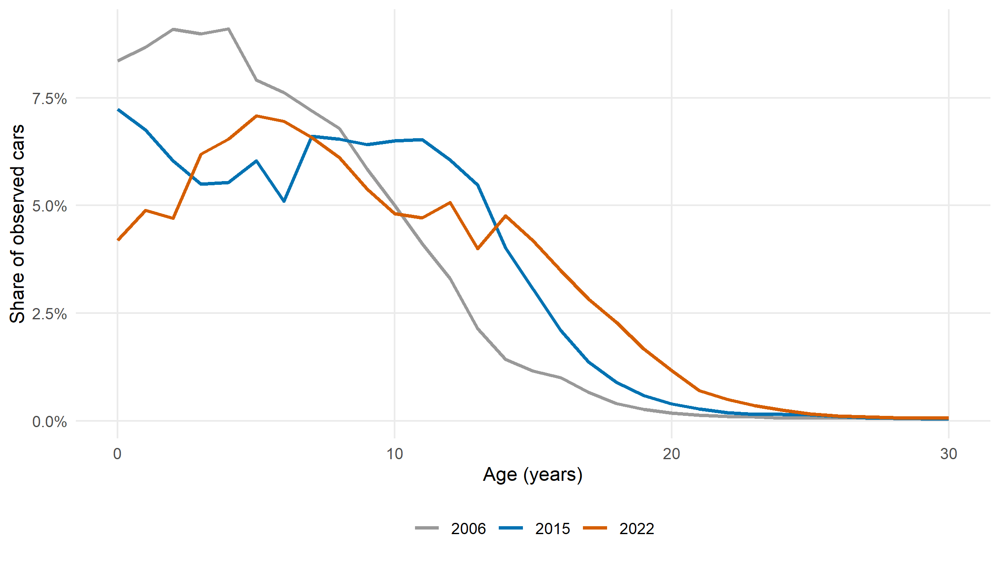
Figure 12. The age of observed cars in 2006, 2015 and 2022, as a share of each year’s cars aged 0 to 30, from mileage_by_age_year_body_fuel.csv.
9. Maps
All maps show 2022 unless stated (see the summary for why). Grey areas have no vehicles.
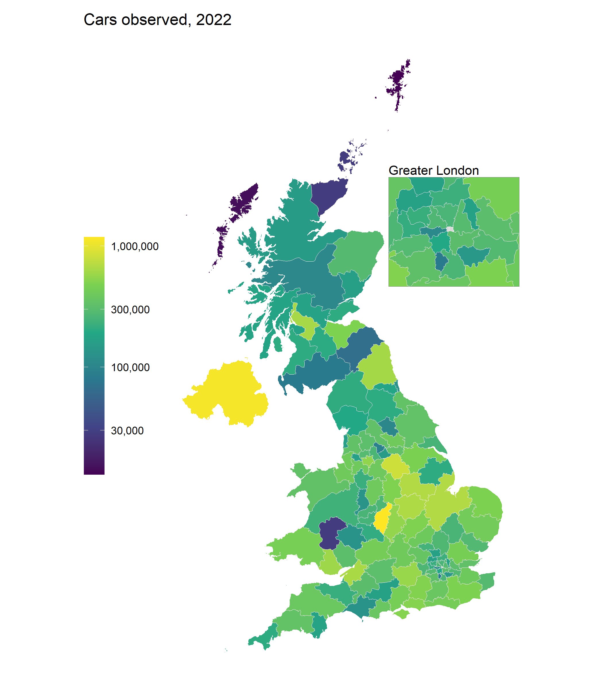
Figure 13. Cars observed in each postcode area in 2022, on a log colour scale (mileage_by_pca_year_body_fuel.csv).
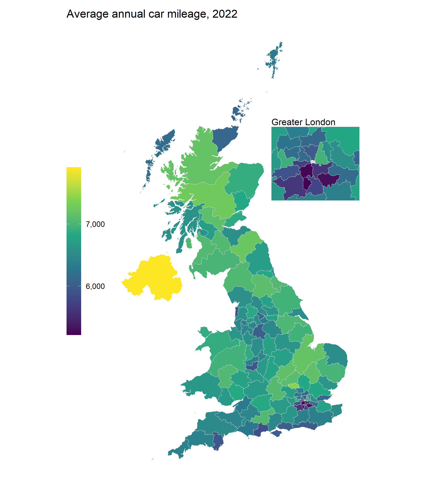
Figure 14. Average annual mileage of the cars observed in each postcode area in 2022: total plausible mileage divided by cars with a plausible mileage.
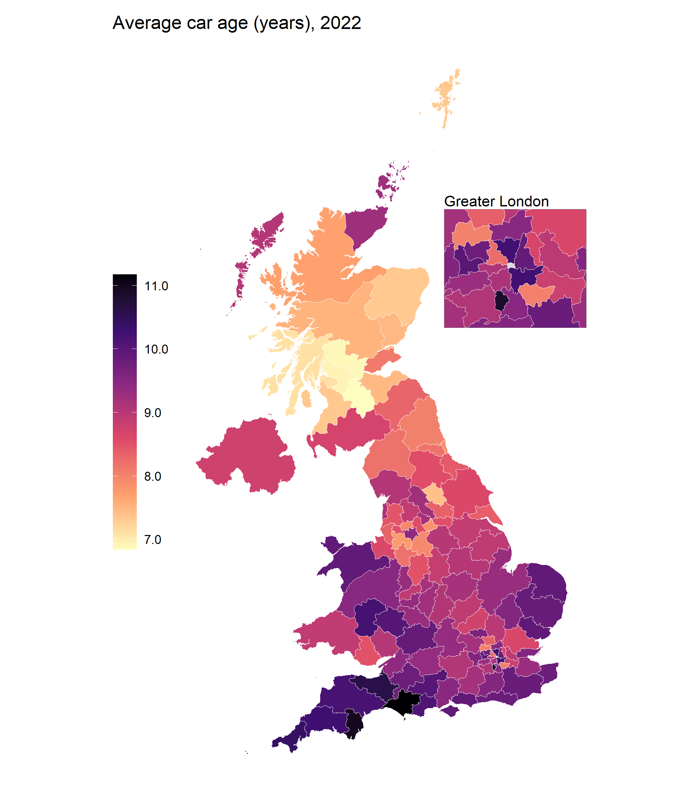
Figure 15. Average age of the cars observed in each postcode area in 2022.
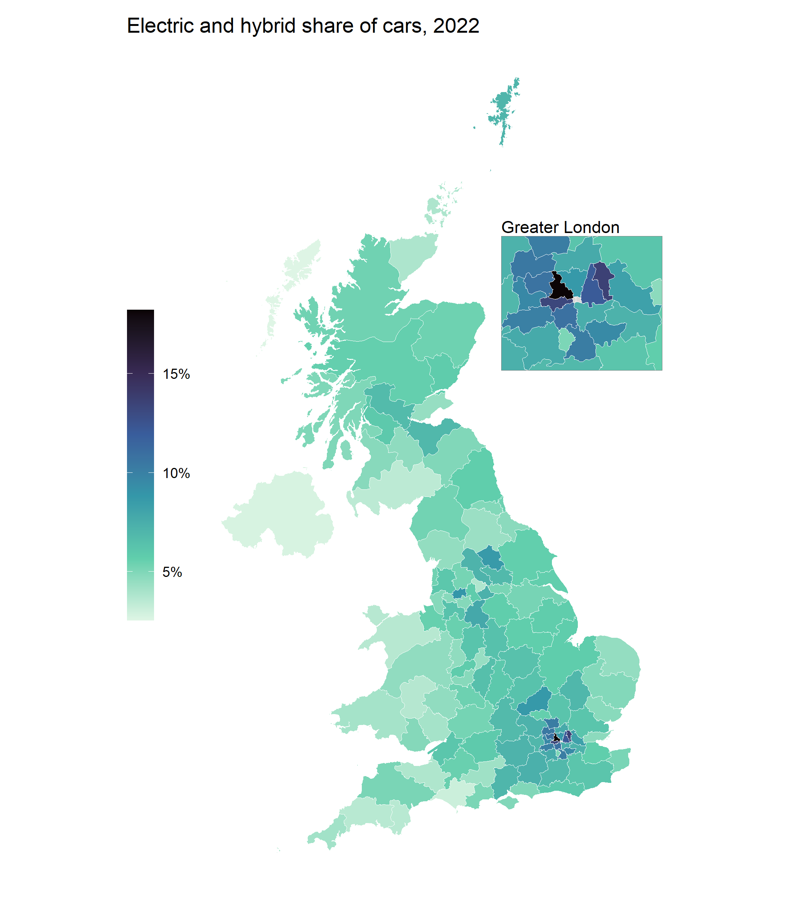
Figure 16. The share of the cars observed in each postcode area in 2022 whose fuel group is Electric, Hybrid Electric or Plug-in Hybrid Electric.
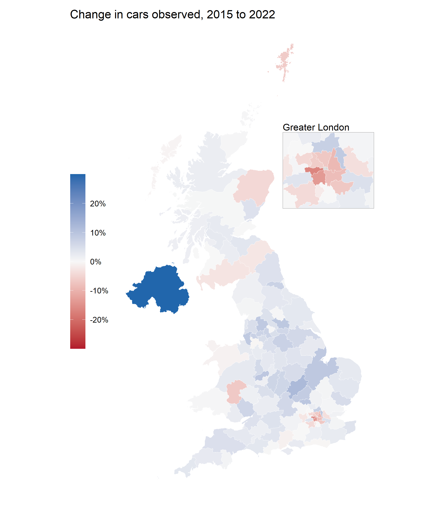
Figure 17. The change in the cars observed in each postcode area from 2015 to 2022, as a share of the 2015 count. Blue is growth and red decline; the colour scale stops at 30% either way.
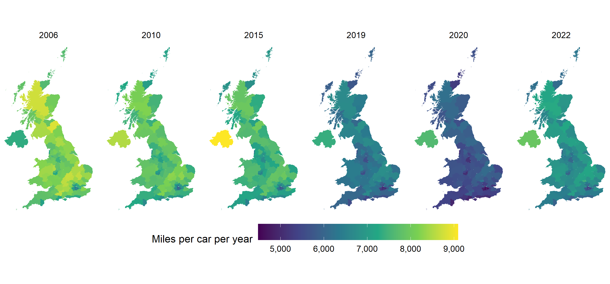
Figure 18. Average annual mileage of the cars observed in each postcode area in 2006, 2010, 2015, 2019, 2020 and 2022, calculated as in the map above, on one colour scale so that the years can be compared.
10. Possible problems in the data
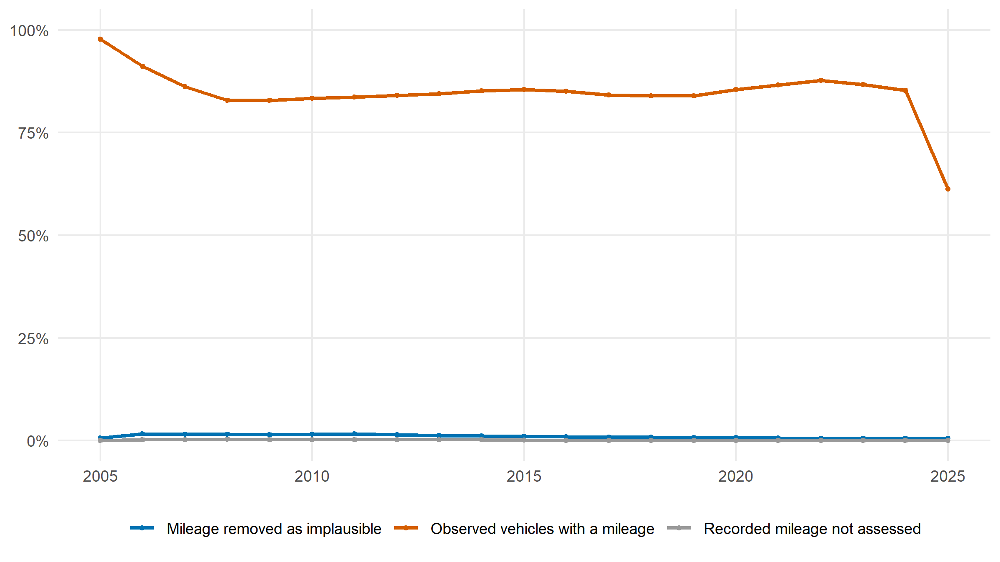
Figure 19. Three shares each year, from mileage_by_pca_year_body_fuel.csv: the observed vehicles with an annual mileage; of the vehicles with a mileage before the annualisation’s checks, those whose mileage it flagged implausible and removed; and of the recorded mileages, those it did not assess. The last two count every vehicle, whether observed that year or not.
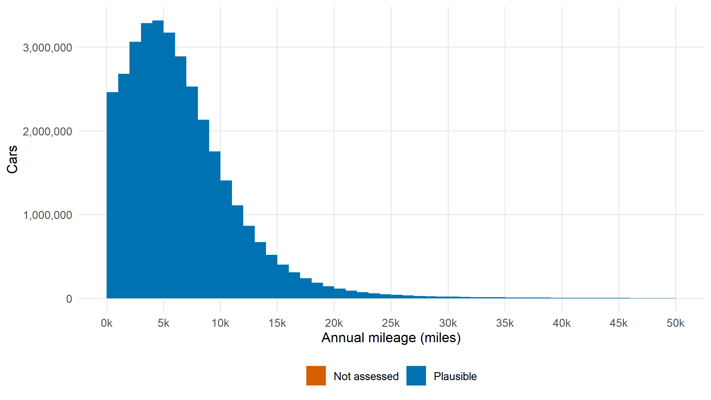
Figure 20. Recorded annual mileage of cars in 2022 in 1,000-mile bands from 0 to 50,000, by whether the annualisation flagged it plausible or did not assess it (mileage_distribution_by_year_body.csv). The table below counts the mileages outside the range shown.
Car mileage outside the chart, 2022
Cars with a recorded annual mileage below 0 or of 50,000 miles or more.
| band | Plausible |
|---|---|
| 50,000 to 99,999 | 2,792 |
Mileage and age checks by year
Counts across all in-scope vehicles. Each column other than n_with_mileage should be small.
n_with_mileage: vehicles with a recorded annual mileagen_not_assessed: recorded mileage with no plausibility flag (left out of the averages)n_mileage_removed: vehicles whose mileage was flagged as implausible and removedn_negative_mileage: annual mileage below 0n_over_50k_mileage: annual mileage above 50,000 milesn_mileage_not_observed: vehicles with a mileage in a year where they have no postcode area (unborn,deadorunknown): mileage without a locationn_negative_age: vehicles first used after 1 June of the year (age below 0)
| year | n_with_mileage | n_not_assessed | n_mileage_removed | n_negative_mileage | n_over_50k_mileage | n_mileage_not_observed | n_negative_age |
|---|---|---|---|---|---|---|---|
| 2005 | 32,452,735 | 0 | 218,720 | 0 | 4,384 | 1,302,674 | 1,631,088 |
| 2006 | 32,814,077 | 78,783 | 541,099 | 0 | 5,128 | 1,236,672 | 1,588,507 |
| 2007 | 33,453,711 | 91,350 | 545,479 | 0 | 4,936 | 1,141,130 | 1,637,570 |
| 2008 | 33,775,906 | 101,540 | 527,435 | 0 | 5,514 | 1,047,002 | 1,315,466 |
| 2009 | 33,847,006 | 100,690 | 515,834 | 0 | 4,932 | 952,834 | 1,409,076 |
| 2010 | 34,105,231 | 93,501 | 540,551 | 0 | 4,976 | 880,057 | 1,293,083 |
| 2011 | 34,266,679 | 96,986 | 571,335 | 0 | 5,093 | 806,232 | 1,277,757 |
| 2012 | 34,584,164 | 96,511 | 520,620 | 0 | 5,836 | 686,919 | 1,352,961 |
| 2013 | 35,209,581 | 94,883 | 449,107 | 0 | 5,373 | 631,989 | 1,515,113 |
| 2014 | 36,140,728 | 93,047 | 436,350 | 0 | 5,379 | 596,905 | 1,651,353 |
| 2015 | 37,170,928 | 65,801 | 397,347 | 0 | 5,241 | 547,045 | 1,764,016 |
| 2016 | 37,964,991 | 4,330 | 358,508 | 0 | 5,740 | 484,619 | 1,777,199 |
| 2017 | 37,800,202 | 4,563 | 333,007 | 0 | 5,170 | 390,038 | 1,294,748 |
| 2018 | 38,286,966 | 6,991 | 317,630 | 0 | 4,978 | 326,516 | 1,523,506 |
| 2019 | 38,657,512 | 7,173 | 283,619 | 0 | 4,116 | 281,915 | 1,500,957 |
| 2020 | 39,529,622 | 3,714 | 302,900 | 0 | 5,580 | 613,752 | 1,373,191 |
| 2021 | 39,832,221 | 5,136 | 253,213 | 0 | 4,642 | 299,275 | 1,142,679 |
| 2022 | 39,936,342 | 5,013 | 238,071 | 0 | 4,832 | 464,841 | 1,032,816 |
| 2023 | 38,906,652 | 5,441 | 224,155 | 0 | 4,689 | 1,282,726 | 24,482 |
| 2024 | 36,734,471 | 6,030 | 211,841 | 0 | 5,394 | 1,299,160 | 12,790 |
| 2025 | 25,803,313 | 8,170 | 147,846 | 0 | 3,590 | 1,846,485 | 253 |
Mileage recorded without a postcode area
Vehicles with an annual mileage in a year whose status is not a postcode area, by status. Mileage in a year before the vehicle’s birth date (unborn) points to a wrong date.
| year | dead | unborn | unknown |
|---|---|---|---|
| 2005 | 0 | 21,246 | 1,281,428 |
| 2006 | 3 | 20,903 | 1,215,766 |
| 2007 | 34 | 19,824 | 1,121,272 |
| 2008 | 61 | 17,771 | 1,029,170 |
| 2009 | 93 | 11,367 | 941,374 |
| 2010 | 128 | 11,138 | 868,791 |
| 2011 | 156 | 11,035 | 795,041 |
| 2012 | 190 | 13,662 | 673,067 |
| 2013 | 230 | 16,816 | 614,943 |
| 2014 | 301 | 15,178 | 581,426 |
| 2015 | 420 | 14,021 | 532,604 |
| 2016 | 814 | 9,718 | 474,087 |
| 2017 | 1,821 | 7,243 | 380,974 |
| 2018 | 3,287 | 9,688 | 313,541 |
| 2019 | 5,428 | 15,712 | 260,775 |
| 2020 | 8,668 | 14,623 | 590,461 |
| 2021 | 15,383 | 27,699 | 256,193 |
| 2022 | 56,660 | 76,854 | 331,327 |
| 2023 | 83,784 | 838,766 | 360,176 |
| 2024 | 141,430 | 5,786 | 1,151,944 |
| 2025 | 138,618 | 0 | 1,707,867 |
Postcode areas without a match
- Codes in the MOT data with no boundary: none.
- Boundaries with no vehicles in the MOT data:
ECandWC. They have no MOT test stations, so their vehicles are tested in neighbouring areas.
Sudden changes in a postcode area
Postcode areas (with at least 10,000 vehicles) whose number of observed vehicles changed by more than 10 percentage points above or below the national change from the previous year: largest 25. A steady rise over many years suggests coverage building up; a jump that reverses the next year points to a recording problem.
| year | pca | vehicles_previous_year | vehicles | change | national_change |
|---|---|---|---|---|---|
| 2006 | BT | 264,565 | 325,194 | 23% | 9% |
| 2007 | BT | 325,194 | 394,129 | 21% | 8% |
| 2009 | BT | 452,771 | 503,134 | 11% | 0% |
| 2010 | BT | 503,134 | 557,246 | 11% | 0% |
| 2017 | BT | 1,060,833 | 1,179,283 | 11% | 1% |
| 2014 | BT | 750,120 | 840,578 | 12% | 2% |
Unusual average car mileage
Postcode area and year combinations (with at least 1,000 cars with a plausible mileage) where the average annual car mileage is more than 20% above or below the national average: largest 25. Rural areas are expected to be higher; a single year out of line with the years either side points to a problem.
| year | pca | cars_with_mileage | mean_mileage | national_mean | difference |
|---|---|---|---|---|---|
| 2020 | BT | 939,371 | 7,629 | 5,641 | 35% |
| 2016 | BT | 813,744 | 9,124 | 7,211 | 27% |
| 2015 | BT | 719,245 | 9,084 | 7,245 | 25% |
| 2010 | SM | 60,482 | 5,675 | 7,501 | -24% |
| 2008 | SM | 58,918 | 5,854 | 7,708 | -24% |
| 2009 | SM | 59,582 | 5,801 | 7,620 | -24% |
| 2018 | SW | 179,670 | 5,345 | 7,017 | -24% |
| 2016 | SW | 190,753 | 5,501 | 7,211 | -24% |
| 2007 | SM | 58,764 | 5,892 | 7,723 | -24% |
| 2017 | SW | 184,065 | 5,464 | 7,158 | -24% |
| 2015 | SW | 192,614 | 5,537 | 7,245 | -24% |
| 2014 | SW | 191,101 | 5,588 | 7,307 | -24% |
| 2024 | SW | 145,899 | 5,167 | 6,743 | -23% |
| 2012 | SW | 190,396 | 5,686 | 7,396 | -23% |
| 2011 | SW | 191,557 | 5,742 | 7,458 | -23% |
| 2013 | SW | 192,064 | 5,679 | 7,369 | -23% |
| 2025 | SW | 90,833 | 5,160 | 6,696 | -23% |
| 2011 | SM | 64,321 | 5,753 | 7,458 | -23% |
| 2014 | BT | 636,559 | 8,973 | 7,307 | 23% |
| 2017 | BT | 913,811 | 8,787 | 7,158 | 23% |
| 2006 | SM | 59,283 | 6,113 | 7,898 | -23% |
| 2010 | SW | 192,854 | 5,810 | 7,501 | -23% |
| 2009 | SW | 196,244 | 5,911 | 7,620 | -22% |
| 2023 | SW | 156,705 | 5,278 | 6,797 | -22% |
| 2008 | SW | 198,658 | 5,993 | 7,708 | -22% |
Vehicles with no body type, 2022
Postcode areas where the share of observed vehicles with no body type is more than three times the national share (0.11%) and above 1%. A vehicle with no make/model match and no test class has no body type, so is counted under Other in the charts.
| pca | vehicles_no_body_type | share |
|---|---|---|
| BT | 51,318 | 3.7% |
11. Source files and how to rebuild
Every table this document describes is listed with its grain and contents in section 2.1, and every column of every one of them in section 2.2. One further input is read directly by the maps:
inputs/postcode_areas_100m.gpkg: postcode area boundaries simplified to 100 m (data-raw/build_postcode_area_boundaries.R).
The tables and this document are built by targets, so rebuilding only repeats what changed:
# the mileage tables, their measurements and this report
targets::tar_make(names = c("mileage_tables", "mileage_area_tables",
"mileage_profile_tables", "mileage_report"))
# just this document, from the tables already written
targets::tar_make(names = "mileage_report")Editing reports/mileage_report.qmd re-renders this document only. Editing R/summary_mileage.R rebuilds the tables and then this document. Every number above is read from the files listed in section 2.1 and the measurements in outputs/quality/mileage_profile/, so nothing here can drift from the build it describes.
12. Things to be careful about, in one place
| Issue | Detail |
|---|---|
| The last year is partial | 2025 holds 25,803,313 vehicle-years with a recorded mileage against 36,734,471 in 2024, and 0.03% of that mileage was never assessed. Do not read a trend into the final year. |
| Young vehicles are missing from the recent years | A vehicle’s mileage is only known once it has had an MOT, at three years old; the annualisation then estimates the earlier years from that test. So the youngest ages fill in only once the first test is in the data and empty out towards the end of the series, and the vehicles that do appear there are the ones tested unusually early. Section 10 quantifies it. |
| Unassessed mileage is not zero mileage | The annualisation removed the mileage it judged implausible, so a recorded mileage is either plausible or unassessed. Treating the unassessed as zero would lose 8,170 vehicle-years in 2025 alone. |
| A growing share of the fleet has no location | The unknown group reaches 12,642,716 vehicles by 2025. They are in the vehicle counts and in no postcode area row, so the area rows do not sum to the fleet. |
| The mileage comes from the annualisation, not the pipeline | Annual mileage, the postcode area and the plausibility flag all come from the annualisation and are taken as given. The pipeline applies no scaling and does not re-derive them. |
| One definition of age, test class and fuel | Every table uses the churn tables’ definitions: age at 1 June, the harmonised test_class and the harmonised fuel_simple. Until October 2026 the test class and fuel tables used the columns as supplied (test_class_ANON, fuel_DVSA) and age was the calendar-year difference, so older copies of these tables are not directly comparable. |
| Vehicles with no body type | 2,927,440 vehicles (3.14%) have no DfT body type, all of them vehicles with no MOT test class. They are grouped as Other rather than dropped. |
| Vehicles with no age | 123 vehicles (0%) have no first use date, so they appear in the vehicle and mileage tables but in no age table. |
| Vehicles with no test class | 5,506,725 vehicles (5.9%) have no test class and are absent from the test class tables, which therefore total less than the fleet. |
| Negative and very large mileage | Over the whole series 0 vehicle-years carry a mileage below zero and 105,523 above 50,000. Both are left in the published tables and counted separately (n_negative_mileage, n_over_50k_mileage) rather than removed. |
| Negative ages are not all errors | n_negative_age in the area table counts every year before a vehicle was first used, and every vehicle first used after 1 June of the year, so it is large by construction and is not a count of errors. Among vehicles actually observed in a postcode area, 26,118,620 have a negative age, nearly all first used later in the year. |
| A mean has a changing denominator | A mean mileage is over the vehicles that have a recorded mileage, not over the fleet, and that denominator changes year by year. The tables carry counts and totals rather than means alone, so a mean can be recomputed over any chosen group. |